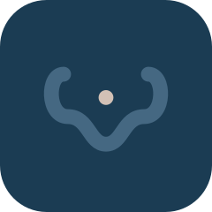
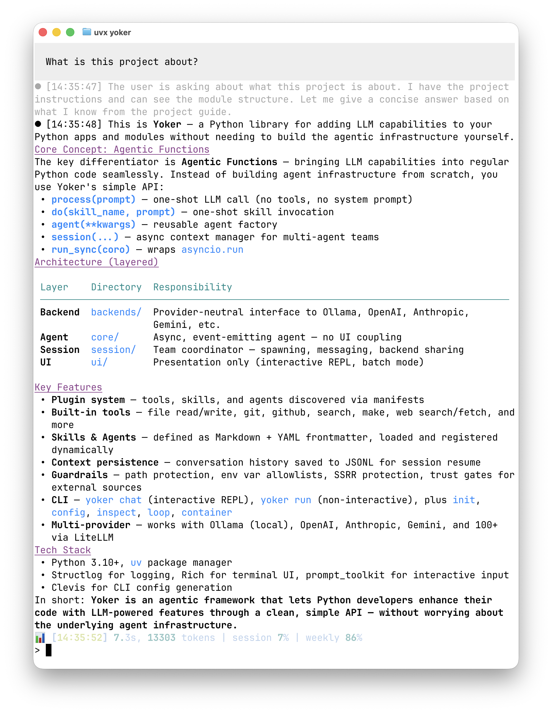

Bring your own tools
File access, git, web search, code execution — or build your own. All configurable, all guarded.

The Python-first agent harness framework.
File access, git, web search, code execution — or build your own. All configurable, all guarded.
Ollama, OpenAI, Anthropic, Gemini, and 100+ more. Switch providers without changing your code.
Static permissions, trust gates, and protected files. You decide what an agent can touch.
Use it as a library in your app, as a CLI, or run agentic packages from GitHub. Your choice.
Get started in seconds — the bootstrap wizard detects your providers, configures everything, and writes your config file for you.
An interactive chat with an agent — tool calls, thinking mode, streaming output, all in the terminal.
